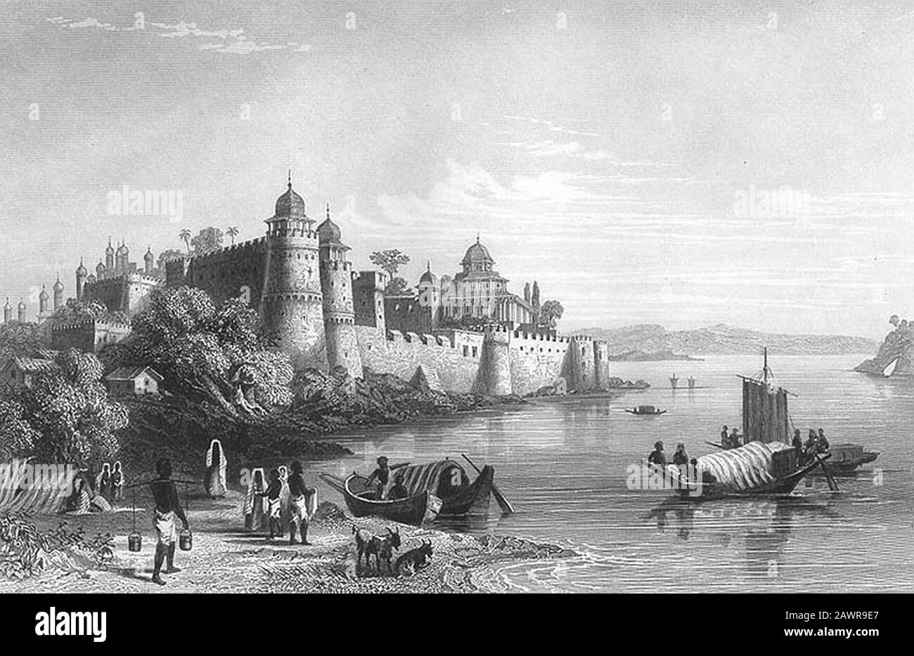

|
Allahabad Fort is a fort built by the Mughal emperor Akbar at Prayagraj in 1583. The fort stands on the banks of the Yamuna, near its confluence with the Ganges. It is classified by the Archaeological Survey of India as a monument of national importance.
A stone inscription inside fort describe 1583 as a foundation year but this stone inscription related to Ashok which was early period situated in Kosambi and taken from there to Allahabad Fort.
|
|
The Allahabad Fort was constructed by the Mughal Emperor Akbar in 1583.
Abu'l-Fazl, in his Akbarnama writes:
For a long time [Akbar's] desire was to found a great city in the town of Piyag [Prayag], where the rivers Ganges and Jamna join, and which is regarded by the people of India with much reverence, and which is a place of pilgrimage for the ascetics of that country, and to build a choice fort there.
— Abu'l Fazl, Akbarnama
Akbar named the fort Illahabas ("blessed by Allah"), which later became "Allahabad". According to Catherine Asher, the construction of the fort was a response to several uprisings that had been taking place in eastern India. Besides the strategic location of Allahabad, Akbar is also thought to have been motivated by the ability to collect taxes from the large number of pilgrims visiting the Triveni Sangam. However, this seems unlikely, considering the fact that Akbar abolished the existing pilgrim taxes in 1563.
Akbar's fort was constructed in such a way that it enclosed the famous Akshayavata tree, where people would commit suicide in order to achieve salvation.
According to a local legend, Akbar was a Hindu ascetic named Mukunda Brahmachari in his previous birth. Once, by mistake, he consumed a cow's hair while drinking milk. Horrified at this sin, he had committed suicide. He was then born a mlechchha (non-Hindu) as a result of this sin, and was driven to build a fort at the holy Triveni Sangam.
In 1600, Mughal prince Salim, the future emperor Jahangir, revolted against his father and established his own court in the Allahabad Fort. He commanded very little territory and was reconciled with his father shortly after.
|  |
The fort was first garrisoned by British East India Company troops in 1765 as part of the Treaty of Allahabad, signed after the Battle of Buxar by Commander-in-Chief of British India Robert Clive, Mughal Emperor Shah Alam II, and the ruler of Awadh, Nawab Shuja-ud-Daula. According to this treaty, the British garrison in the fort was to defend and protect Shah Alam, however, Shah Alam, finding this arrangement restrictive, slipped away to Delhi in 1772, where he attempted to cede Allahabad to the Maratha Empire. The British intervened and contrived to nullify Alam's claim to the fort, proclaiming Shuja-ud-Daula its sole owner. Shuja-ud-Daula died and was succeeded as Nawab of Awadh by Asaf-ud-Daula in 1775; despite persistent attempts of the Company to formally acquire the fort, it remained in the Nawab's hands. Asaf-ud-Daula died in 1787, leaving large debts to the Company and an heir of disputed parentage, who was promptly deposed by Saadat Ali Khan I. Finally, in February 1798, a financially strapped Saadat Ali ceded the fort to the Company. Three years later, in 1801, Saadat Ali finally ceded the district of Allahabad to the British. Once Allahabad became a functional part of the East India Company's territories, its fort was established as the grand depot for military stores.